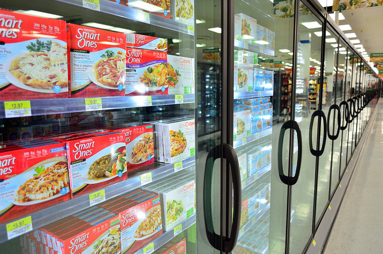
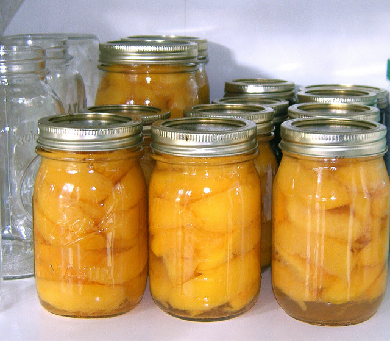
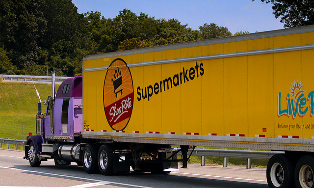

how web apps work
database (stores information)

app i.e. rails (gets it ready)
front end (serves it)
CRUD
all data comes from users
no going to grocery store or sharing w/ other kitchens
just use what's in your pantry.
"homemade data"

APIs
apps share data between their kitchens
